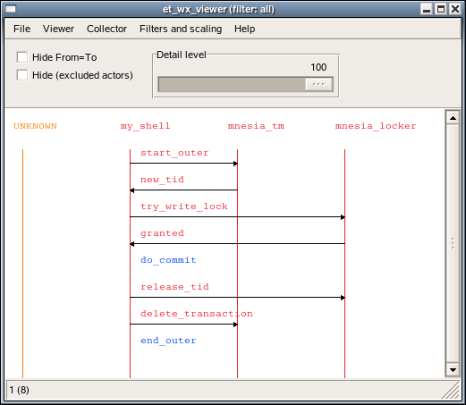
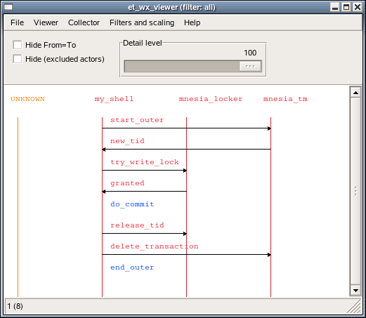
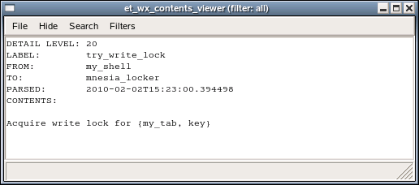
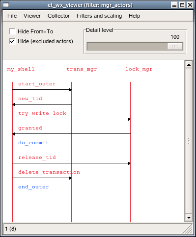
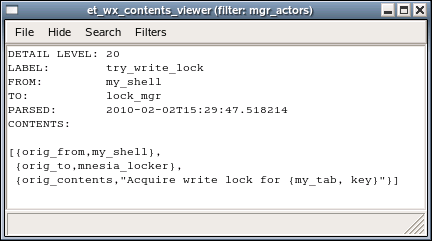
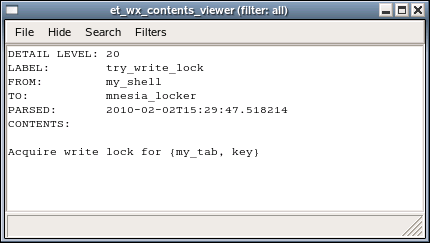

Description
View SourceOverview
The two major components of the Event Tracer (ET) tool is a graphical sequence
chart viewer (et_viewer) and its backing storage (et_collector). One
Collector may be used as backing storage for several simultaneous Viewers
where each one may display a different view of the same trace data.
The interface between the Collector and its Viewers is public in order to
enable other types of Viewers. However in the following text we will focus on
usage of the et_viewer.
The main start function is et_viewer:start/1. By default it will start both an
et_collector and an et_viewer:
% erl -pa et/examples
Erlang R13B03 (erts-5.7.4) [64-bit] [smp:4:4] [rq:4] [async-threads:0] [kernel-poll:false]
Eshell V5.7.4 (abort with ^G)
1> {ok, Viewer} = et_viewer:start([]).
{ok,<0.40.0>}A Viewer gets trace Events from its Collector by polling it regularly for
more Events to display. Events are for example reported to the Collector
with et_collector:report_event/6:
2> Collector = et_viewer:get_collector_pid(Viewer).
<0.39.0>
3> et_collector:report_event(Collector, 60, my_shell, mnesia_tm, start_outer,
3> "Start outer transaction"),
3> et_collector:report_event(Collector, 40, mnesia_tm, my_shell, new_tid,
3> "New transaction id is 4711"),
3> et_collector:report_event(Collector, 20, my_shell, mnesia_locker, try_write_lock,
3> "Acquire write lock for {my_tab, key}"),
3> et_collector:report_event(Collector, 10, mnesia_locker, my_shell, granted,
3> "You got the write lock for {my_tab, key}"),
3> et_collector:report_event(Collector, 60, my_shell, do_commit,
3> "Perform transaction commit"),
3> et_collector:report_event(Collector, 40, my_shell, mnesia_locker, release_tid,
3> "Release all locks for transaction 4711"),
3> et_collector:report_event(Collector, 60, my_shell, mnesia_tm, delete_transaction,
3> "End of outer transaction"),
3> et_collector:report_event(Collector, 20, my_shell, end_outer,
3> "Transaction returned {atomic, ok}").
{ok,{table_handle,<0.39.0>,16402,trace_ts,
#Fun<et_collector.0.62831470>}}This actually is a simulation of the process Events caused by a Mnesia
transaction that writes a record in a local table:
mnesia:transaction(fun() -> mnesia:write({my_tab, key, val}) end).At this stage when we have a couple of Events, it is time to show how it looks
like in the graphical interface of et_viewer:

In the sequence chart, the actors (which symbolically has performed the Event)
are shown as named vertical bars. The order of the actors may be altered by
dragging (hold mouse button 1 pressed during the operation) the name tag of an
actor and drop it elsewhere:

An Event may be an action performed by one single actor (blue text label) or
it may involve two actors and is then depicted as an arrow directed from one
actor to another (red text label). Details of an Event can be shown by
clicking (press and release the mouse button 1) on the event label text or on
the arrow. When doing that a Contents Viewer window pops up. It may look like
this:

Filters and dictionary
The Event Tracer (ET) uses named filters in various contexts. An Event Trace
filter is an Erlang fun that takes some trace data as input and returns a
possibly modified version of it:
filter(TraceData) -> false | true | {true, NewEvent}
TraceData = Event | erlang_trace_data()
Event = #event{}
NewEvent = #event{}The interface of the filter function is the same as the the filter functions for
the good old lists:filtermap/2. If the filter returns false it means that
the trace data should silently be dropped. true means that the trace data data
already is an Event Record and that it should be kept as it is. true means
that the TraceData already is an Event Record and that it should be kept as
it is. {true, NewEvent} means that the original trace data should be replaced
with Event. This provides means to get rid of unwanted Events as well as
enabling alternate views of an Event.
The first filter that the trace data is exposed for is the Collector Filter.
When a trace Event is reported with et_collector:report/2 (or
et_collector:report_event/5,6) the first thing that happens, is that a message
is sent to the Collector process to fetch a handle that contains some useful
stuff, such as the Collector Filter Fun and an Ets table identifier. Then the
Collector Filter Fun is applied and if it returns true (or
{true, NewEvent}), the Event will be stored in an Ets table. As an
optimization, subsequent calls to et_collector:report-functions can use the
handle directly instead of the Collector Pid.
All filters (registered in a Collector or in a Viewer) must be able to
handle an Event record as input. The Collector Filter (that is the filter
named all) is a little bit special, as its input also may be raw
Erlang Trace Data
The Collector manages a key/value based dictionary, where the filters are
stored. Updates of the dictionary is propagated to all subscribing processes.
When a Viewer is started it is registered as a subscriber of dictionary
updates.
In each Viewer there is only one filter that is active and all trace Events
that the Viewer gets from the Collector will pass thru that filter. By
writing clever filters it is possible to customize how the Events looks like
in the viewer. The following filter in et/examples/et_demo.erl replaces the
actor names mnesia_tm and mnesia_locker and leaves everything else in the
record as it was:
mgr_actors(E) when is_record(E, event) ->
Actor = fun(A) ->
case A of
mnesia_tm -> trans_mgr;
mnesia_locker -> lock_mgr;
_ -> A
end
end,
{true, E#event{from = Actor(E#event.from),
to = Actor(E#event.to),
contents = [{orig_from, E#event.from},
{orig_to, E#event.to},
{orig_contents, E#event.contents}]}}.If we now add the filter to the running Collector:
4> Fun = fun(E) -> et_demo:mgr_actors(E) end.
#Fun<erl_eval.6.13229925>
5> et_collector:dict_insert(Collector, {filter, mgr_actors}, Fun).
okyou will see that the Filter menu in all viewers have got a new entry called
mgr_actors. Select it, and a new Viewer window will pop up:

In order to see the nitty gritty details of an Event you may click on the
Event in order to start a Contents Viewer for that Event. In the
Contents Viewer there also is a filter menu that enables inspection of the
Event from other views than the one selected in the viewer. A click on the
new_tid Event will cause a Contents Viewer window to pop up, showing the
Event in the mgr_actors view:

Select the all entry in the Filters menu and a new Contents Viewer window
will pop up showing the same trace Event in the collectors view:

Trace clients
As you have seen, it is possible to use the et_collector:report_event/5,6
functions explicitly. By using those functions you can write your own trace
client that reads trace data from any source stored in any format and just feed
the Collector with it. You may replace the default Collector Filter with a
filter that converts new exciting trace data formats to Event Records or you
may convert it to an Event Record before you invoke et_collector:report/2
and then rely on the default Collector Filter to handle the new format.
There are also existing functions in the API that reads from various sources and
calls et_collector:report/2:
The trace
Eventsthat are hosted by theCollectormay be stored to file and later be loaded by selectingsaveandloadentries in theViewersFilemenu or via theet_collectorAPI.It is also possible to perform live tracing of a running system by making use of the built-in trace support in the Erlang emulator. These Erlang traces can be directed to files or to ports. See the reference manual for
erlang:trace/3,erlang:trace_pattern/3,dbgandttbfor more info.There are also corresponding trace client types that can read the Erlang trace data format from such files or ports. The
et_collector:start_trace_client/3function makes use of these Erlang trace clients and redirects the trace data to theCollector.The default
Collector Filterconverts the raw Erlang trace data format intoEvent Records. If you want to perform this differently you can of course write your ownCollector Filterfrom scratch. But it may probably save you some efforts if you first apply the default filter inet_selector:parse_event/2before you apply your own conversions of its output.
Global tracing
Setting up an Erlang tracer on a set of nodes and connecting trace clients to
the ports of these tracers is not intuitive. In order to make this it easier the
Event Tracer has a notion of global tracing. When used, the et_collector
process will monitor Erlang nodes and when one connects, an Erlang tracer will
automatically be started on the newly connected node. A corresponding trace
client will also be started on the Collector node in order to automatically
forward the trace Events to the Collector. Set the boolean parameter
trace_global to true for either the et_collector or et_viewer in order
to activate the global tracing. There is no restriction on how many concurrent
(anonymous) collectors you can have, but you can only have one global
Collector as its name is registered in global.
In order to further simplify the tracing, you can make use of the
et:trace_me/4,5 functions. These functions are intended to be invoked from
other applications when there are interesting Events, in your application that
needs to be highlighted. The functions are extremely light weight as they do
nothing besides returning an atom. These functions are specifically designed to
be traced for. As the caller explicitly provides the values for the
Event Record fields, the default Collector Filter is able to automatically
provide a customized Event Record without any user defined filter functions.
In normal operation, the et:trace_me/4,5 calls are almost for free. When
tracing is needed, you can either activate tracing on these functions
explicitly. Or you can combine the usage of trace_global with the usage of
trace_pattern. When set, the trace_pattern will automatically be activated
on all connected nodes.
One nice thing with the trace_pattern is that it provides a very simple way of
minimizing the amount of generated trace data by allowing you to explicitly
control the detail level of the tracing. As you may have seen the et_viewer
have a slider called "Detail Level" that allows you to control the detail
level of the trace Events displayed in the Viewer. On the other hand if you
set a low detail level in the trace_pattern, lots of the trace data will never
be generated and thus not sent over the socket to the trace client and stored in
the Collector.
Viewer window
Almost all functionality available in the et_viewer is also available via
shortcuts. Which key that has the same effect as selecting a menu entry is shown
enclosed in parentheses. For example pressing the key r is equivalent to
selecting the menu entry Viewer->Refresh.
File menu:
Clear all events in the Collector- Deletes allEventsstored in theCollectorand notifies all connectedViewersabout this.Load events to the Collector from file- Loads theCollectorwithEventsfrom a file and notifies all connectedViewersabout this.Save all events in the Collector to file- Saves allEventsstored in theCollectorto file.Print setup- Enables editing of printer setting, such as paper and layout.Print current page- Prints the events on the current page. The page size is dependent of the selected paper type.Print all pages- Prints all events. The page size is dependent of the selected paper type.Close this Viewer- Closes thisViewerwindow, but keeps all otherViewerswindows and theCollectorprocess.Close other Viewers, but this- Keeps thisViewerwindow and itsCollectorprocess, but closes all otherViewerswindowsconnected to the sameCollector.Close all Viewers and the Collector- Closes theCollectorand allViewersconnected to it.
Viewer menu:
First- Scrollsthisviewer to the firstEventin theCollector.Last- Scrollsthisviewer to the lastEventin theCollector.Prev- Scrollsthisviewer one page backwards.Next- Scrollsthisviewer one page forward.Refresh- Clearsthisviewer and re-read itsEventsfrom theCollector.Up- Scrolls a fewEventsbackwards.Down- Scrolls a fewEventsforward.Display all actors.- Reset the settings for hidden and/or highlighted actors.
Collector menu:
First- Scrollsallviewers to the firstEventin theCollector.Last- Scrollsallviewers to the lastEventin theCollector.Prev- Scrollsallviewers one page backwards.Next- Scrollsallviewers one page forward.Refresh- Clearsallviewers and re-read theirEventsfrom theCollector.
Filters and scaling menu:
ActiveFilter (=)- Starts a newViewerwindow with the same active filter and scale as the current one.ActiveFilter (+)- Starts a newViewerwindow with the same active filter but a larger scale than the current one.ActiveFilter (-)- Starts a newViewerwindow with the same active filter but a smaller scale than the current one.all (0)- Starts a newViewerwith theCollector Filteras active filter. It will cause all events in the collector to be viewed.AnotherFilter (2)- If more filters are inserted into the dictionary, these will turn up here as entries in theFiltersmenu. The second filter will get the shortcut number 2, the next one number 3 etc. The names are sorted.
Slider and radio buttons:
Hide From=To- When true, this means that theViewerwill hide allEventswhere the from-actor equals to its to-actor. These events are sometimes called actions.Hide (excluded actors)- When true, this means that theViewerwill hide allEventswhose actors are marked as excluded. Excluded actors are normally enclosed in round brackets when they are displayed in theViewer.Detail level- This slider controls the resolution of theViewer. OnlyEventswith a detail levelsmallerthan the selected one (default=100=max) are displayed.
Other features:
Vertical scroll- Use mouse wheel and up/down arrows to scroll little. Use page up/down and home/end buttons to scroll more.Display details of an event- Left mouse click on the event label or the arrowand a newContents Viewerwindow will pop up, displaying the contents of anEvent.Highlight actor (toggle)- Left mouse click on the actor name tag. The actor name will be enclosed in square brackets[]. When one or more actors are highlighted, only events related to those actors are displayed. All others are hidden.Exclude actor (toggle)- Right mouse click on the actor name tag. The actor name will be enclosed in round brackets(). When an actor is excluded, all events related to this actor is hidden. If the checkboxHide (excluded actors)is checked, even the name tags and corresponding vertical line of excluded actors will be hidden.Move actor- Left mouse button drag and drop on actor name tag. Move the actor by first clicking on the actor name, keeping the button pressed while moving the cursor to a new location and release the button where the actor should be moved to.Display all actors- Press the 'a' button. Reset the settings for hidden and/or highlighted actors.
Configuration
The Event Records in the Ets table are ordered by their timestamp. Which
timestamp that should be used is controlled via the event_order parameter.
Default is trace_ts which means the time when the trace data was generated.
event_ts means the time when the trace data was parsed (transformed into an
Event Record).
Contents viewer window
File menu:
Close- Close this window.Save- Save the contents of this window to file.
Filters menu:
ActiveFilter- Start a newContents Viewer windowwith the same active filter.AnotherFilter (2)- If more filters are inserted into the dictionary, these will turn up here as entries in theFiltersmenu. The second filter will be number 2, the next one number 3 etc. The names are sorted.
Hide menu:
Hide actor in viewer- Known actors are shown as a named vertical bars in theViewerwindow. By hiding the actor, its vertical bar will be removed and theViewerwill be refreshed.Hiding the actoris only useful if themax_actorsthreshold has been reached, as it then will imply that the "hidden" actor will be displayed as if it were"UNKNOWN". If themax_actorsthreshold not have been reached, the actor will re-appear as a vertical bar in theViewer.Show actor in viewer- This implies that the actor will be added as a known actor in theViewerwith its own vertical bar.
Search menu:
Forward from this event- Set this event to be the first event in the viewer and change its display mode to be enter forward search mode. The actor of this event (from, to or both) will be added to the list of selected actors.Reverse from this event- Set this event to be the firstEventin theViewerand change its display mode to be enter reverse search mode. The actor of thisEvent(from, to or both) will be added to the list of selected actors. Observe, that theEventswill be shown in reverse order.Abort search. Display all- Switch the display mode of theViewerto show allEventsregardless of any ongoing searches. Abort the searches.